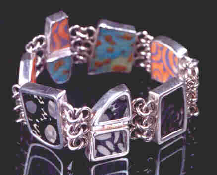

The Web Page of Evelyn Peckham Arvey
Home Page Resume Jewelry Acrylic Paintings
"Art excites and consumes me. Pattern, texture, and vibrant, bold color are the focus of my work. The bright colors and moving patterns in my work are an extension of myself, a manifestation of my life experience. I enjoy working in a variety of mediums, including jewelry, ceramics, and acrylics."
|

|
JEWELRY
My jewelry is truly one of a kind. Many pieces incorporate my hand-painted ceramics. Some necklaces are fully reversible with different color schemes on each side. I also make hand-woven sterling silver chains, ceramic beads, pendants, bracelets, rings, earrings, and a special silver "lace" bracelet of my own design.
ACRYLICS
|
Art and Elegance in Beads
April 25 (10 AM to 9 PM), April 26 (10 AM to 9 PM), and April 27 (10 AM to 5 PM) at Oregon Convention Center, Portland, OR.
Edmonds Arts Festival
June 13 (11 AM to 9 PM), June 14 (10 AM to 8 PM), and June 15 (10 AM to 6 PM) at Frances Anderson Center, 7th and Main Street, Edmonds, WA.
Puget Sound Bead Festival
July11 (10 AM to 6 PM), July 12 (10 AM to 7 PM), and July13 (11 AM to 5 PM) at Greater Tacoma Convention and Trade Center, 1500 Broadway, Tacoma, WA.
Bellevue Festival of the Arts
July 25 (10 AM to 8 PM), July 26 (10 AM to 8 PM), and July 27 (10 AM to 6 PM) just north of Bellevue Square (Bellevue Way NE and NE 8th Street), Bellevue, WA.
Best of the Northwest - Fall Show
Dates and location to be announced. Please see their website www.nwcraftsalliance.com .
I also show my work by appointment at my home located in the Laurelhurst neighborhood of Seattle. Please call (206-524-7104) or email (evelynarvey@gmail.com) for an appointment.
Home Page Resume Jewelry Acrylic Paintings
To contact Vivid Arts:
Phone: 206-524-7104
Fax: 206-524-7104
Email: evelynarvey@gmail.com
Evelyn Arvey
3817 41st Avenue NE
Seattle, WA 98105